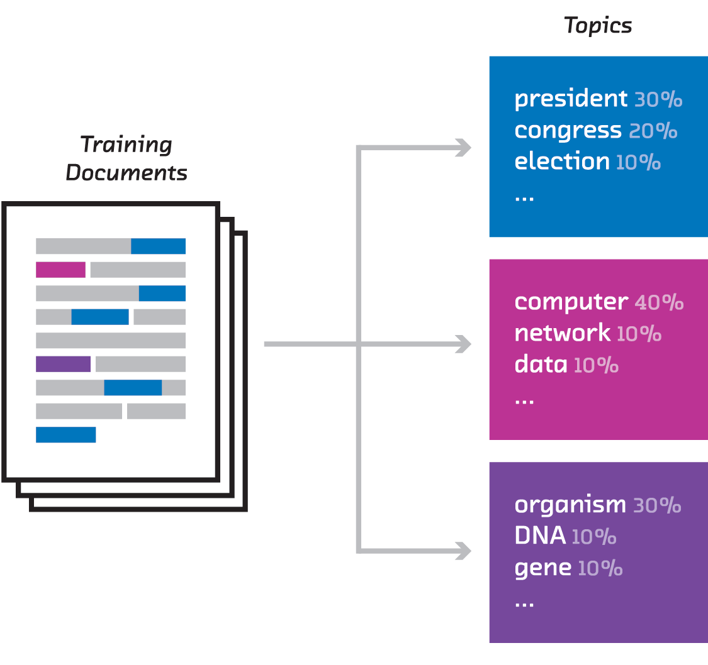
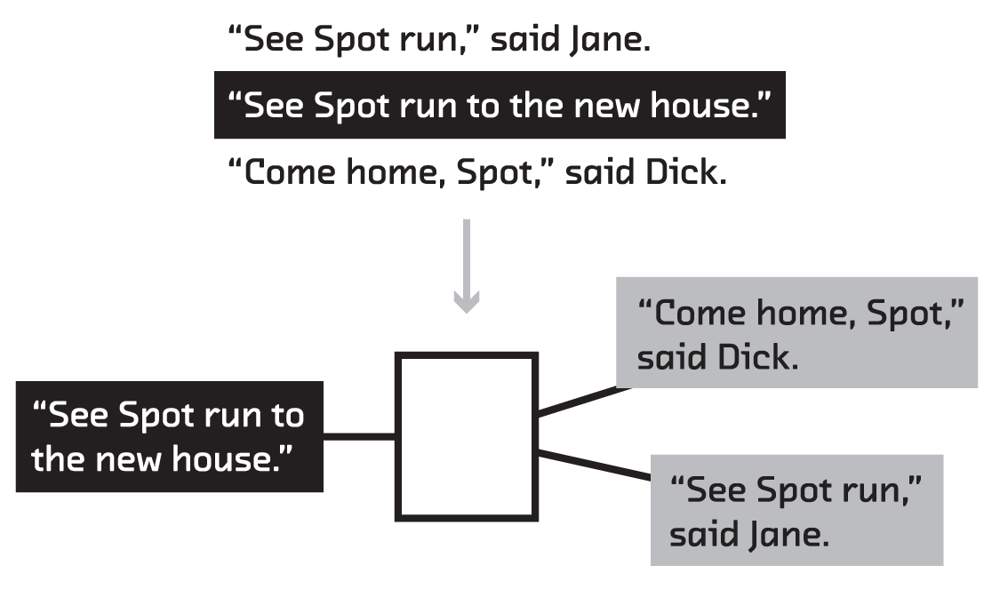
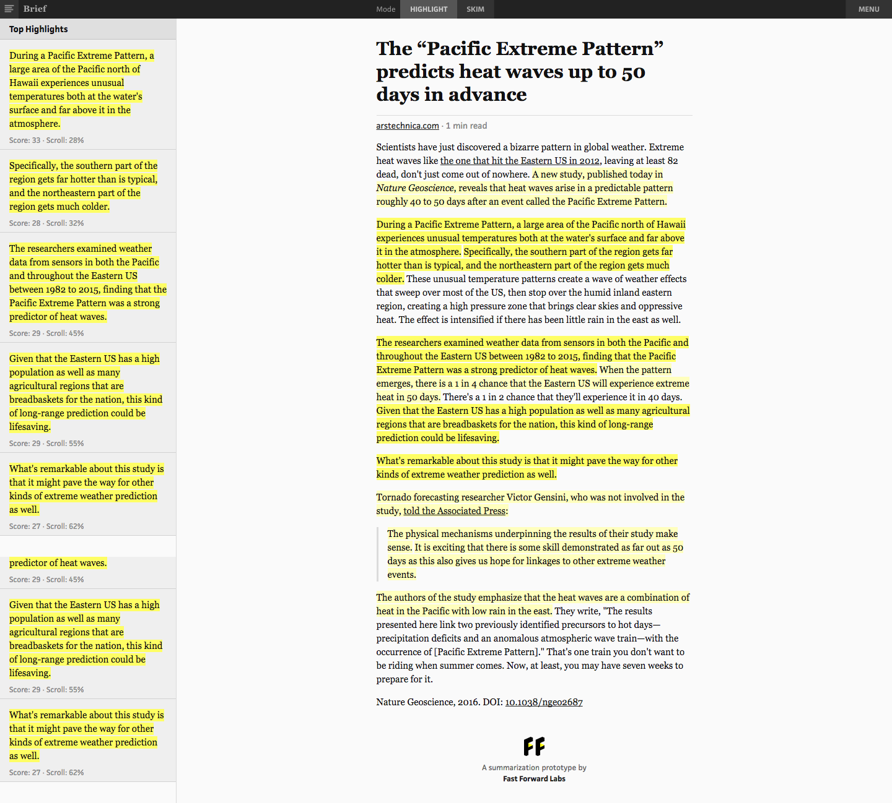
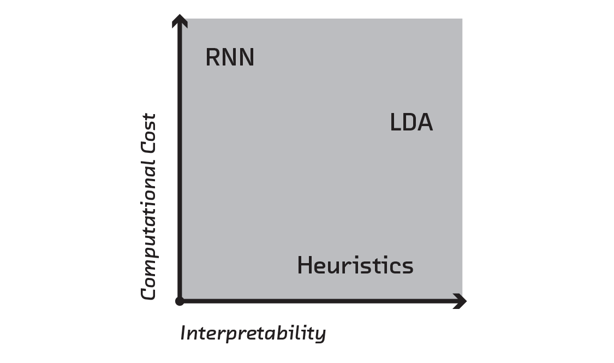
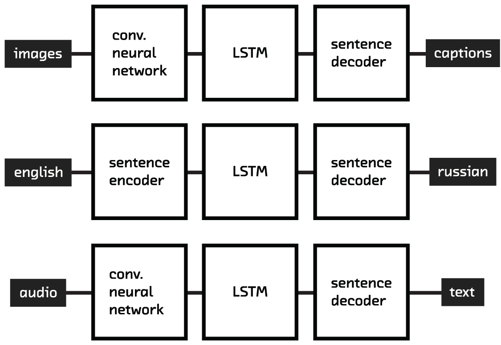

class: center, middle <img src="ff-logo-transparent-bg.png" width="30%"> # Summarizing documents #### Mike Williams • [@mikepqr](http://twitter.com/mikepqr) • [mike.place/talks/pygotham](http://mike.place/talks/pygotham) #### [@fastforwardlabs](https://twitter.com/fastforwardlabs) • [fastforwardlabs.com](http://fastforwardlabs.com) ??? I'm going to explain three approaches to summarizing documents. Summarization is intrinsically important task so hopefully you'll find these inherently useful. But step 1 of any good summarization algorithm is also step 1 of any other algorithm dealing with language, so these ideas are important even if you don't have a need for summarization. Summarization is a concrete context in which to address one of the most fundamental to working with human language on computers. --- class: center, middle, full-bleed, ff04 ??? Why am I talking about this topic? I work at Fast Forward Labs. We do applied research on statistics, machine learning, data science, etc. Today's talk relates to our most recent report. For our reports we build working prototypes to demo the algorithm. We build those prototypes in Python because it's expressive, popular in the research community, and the lingua franca for many of our conversations with clients. In this talk I'm going to describe the technical work that went into those prototypes. So I'll show some Python. But mainly I'm going to focus on explaining the algorithms conceptually. --- class: center, middle <img src="overview_extracted.png" width="50%"> ??? But first let's define the problem. We want to _extract_ salient excerpts from a document. This is extractive summarization is an incredibly important task, now more than ever. (There's also _abstractive_ summarization, which is a much tougher problem that we're not going to get into today.) --- class: center, middle <img src="overview_multi.png" width="50%"> ??? Multi-document summarization is a closely related and equally important task. --- class: left ## Outline - Luhn's method of 1958 - Topic modelling for multi-document summarization - Skip-thoughts and recurrent neural networks for single document summarization - Which approach is best for me? - How all this relates to other language problems - Further reading ??? This is a one hour talk, so I want to give you some idea of where we're heading. I'm going to spend most of the talk explaining 3 approaches. The first is stupid simple, and sets the stage. The second is a little more sophisticated. And the third uses techniques that academics specializing in machine learning are still figuring out. I'll compare their performance and engineering trade-offs. But as I mentioned at the start, summarization is also a concrete context that allows us to look at the latest work on language modelling. Vaguely speaking, language modelling is how we get text into a computer, so the computer can perform a downstream task with it (like summarization). A bag of words is a language model. We're going to use modern approaches that improve on that, and are useful for tasks other than summarization. And finally, this talk is technical but conceptual. I'm going to point to some further reading at the end if you want to get into the details. --- class: center, full-bleed ??? This is Hans Peter Luhn. He worked at IBM from 1941 until his death in 1968. --- class: center, middle, full-bleed <img src="luhnpaper.png"> ??? We're interested in him because he wrote this paper in 1958. You can find it online pretty easily. It's a seminal paper, and worth reading. But the easiest way to explain the algorithm is to show you a demo. [http://www.fastforwardlabs.com/luhn/](http://www.fastforwardlabs.com/luhn/) --- class: center, full-bleed <img src="luhn1.png" width="80%"> --- class: center, full-bleed <img src="luhn2.png" width="80%"> --- class: center, full-bleed <img src="luhn3.png" width="80%"> --- class: center, full-bleed <img src="luhn4.png" width="80%"> --- class: center, full-bleed <img src="luhn5.png" width="80%"> ??? Luhn's method is very simple. And it actually works OK in jargon-heavy documents. It follows a vectorize, score and select framework. It first vectorizes, i.e. turns each sentence into numbers (in this case bag of words). It then scores using an arubtrary but pretty reasonable scoring function: how many of the significant words does each sentence contain. Then it selects. You could improve the scoring of sentences with other heuristics, like "does this sentence appear early in the document?" Or does it include the words "In summary"?! But these approaches are fragile and domain specific. They need the engineer to understand the documents in order to invent heuristics and assess the quality of the summaries they produce. And there's a more fundamental problem with Luhn's algorithm, which is that the vectorization step allows it to look only for common words. Not common _topics_. If you mention movies 100 times, it won't assign a high score to a sentence containing the word "film". Or the word "director" This brings us to topic modelling. In this approach, rather than look for common words in a document, and find sentences with lots of those, we're going to look for the dominant topics in a document, and find sentences that are themselves dominated by those topics. --- class: center, middle, full-bleed <img src="blei.jpg" width="50%"> ??? The specific algorithm we're going to use is called Latent Dirichlet Allocation, which David Blei published with co-authors in 2003. --- class: center, middle <img src="lda_evaluate.png" width="60%"> ??? Remember in Luhn's approach we looked for sentences that mention words that occur frequently in the document. We're simply going to replace words with topics. We're going to find sentences that mention topics that occur frequently in the document. But what's a topic, and how can we use computers to find them automatically? That's where topic modeling, and Latent Dirichlet Allocation in particular, comes in. In LDA, a document is modeled as being generated by a random process. This is obviously wrong, but bear with me. Each document is made of topics in certain proportions (say 50% politics, 30% computers, 20% genetics). In that sense each document is a probability distribution over topics. And each topic is a probability distribution over all the words in the English language. So the probability distribution for the politics topic assigns high probability to words like Obama and Trump and Boris Johnson, and low probability to cheesecake. We assume documents are written by someone drawing at random from these distributions: to generate each word, first they choose a topic at random (with probabilities equal to their document proportions). Then they choose a word from that topic, which remember is a probability distribution over words. That all sounds very nice, but we don't have these probability distributions for topics and documents. We just have a stack of documents. We don't know which topics each document contains, and we don't even know what topics exist. --- class: center, middle  ??? We first need to run the model in reverse to discover what topics exist in our kinds of documents. This is an example of a class of problems known as posterior inference, and I'm not going to get into the details. I'll recommend some reading (and actually a PyData talk). But suffice it to say, since version 0.17, Latent Dirichlet Allocation is built into scikit-learn. --- class: middle ```python In [1]: import sklearn.lda ``` ``` /Users/mike/.virtualenvs/ds3/lib/python3.5/site-packages/sklearn/lda.py:4: DeprecationWarning: lda.LDA has been moved to discriminant_analysis.LinearDiscriminantAnalysis in 0.17 and will be removed in 0.19 "in 0.17 and will be removed in 0.19", DeprecationWarning) ``` ```python In [2]: from sklearn.decomposition import LatentDirichletAllocation ``` ??? One warning: sklearn had already used the name LDA for something else. They're in the process of renaming things, but just be aware of this when you're reading the docs. --- class: middle ```python import lda # https://github.com/ariddell/lda from sklearn.feature_extraction.text import CountVectorizer documents = function_that_loads_a_big_corpus_of_documents_into_a_python_sequence() vec = CountVectorizer(stop_words='english', binary=True) X = vec.fit_transform(documents) vocab = sorted(vec.vocabulary_, key=vec.vocabulary_.get) # you'll need this later lda_model = lda.LDA(n_topics=100) lda_model.fit(X) # now make coffee, catch pokémon, etc. ``` --- class: middle `lda_model.topic_word_` is an array. It has n_topics rows and `len(vocab)` columns. Each row is the probability distribution over words for that topic. ```python def topn_indices(arr, n): '''Indices of the top n elements in arr, sorted by value''' return np.argsort(-arr)[:n] def print_lda(lda_model, n_words=10): '''Print top n_words words for all topics of an LDA model''' for i, _ in enumerate(lda_model.topic_word_): print_topic(model, i) def print_topic(lda_model, i, n_words=10): '''Print top n_words words from topic i''' top_words = topn_indices(lda_model.topic_word_[i], n_words) words = np.array(vocab)[top_words] print('*{}* {}'.format(i, ' '.join(words))) ``` --- class: middle ``` *0* food recipes book cookbook make cook cooking eat recipe like *1* fantasy world magic story series witch king harry lord evil *2* town people small place land live home life farm country *3* book john life story read green like man mark great *4* novel characters story reader character plot life lives readers events *5* mystery murder crime detective police case killer mysteries novel series *6* bad man gets hero just way doesn good kill guy *7* science scientific human evolution theory scientists universe physics natural earth *8* society world human man people power evil self life nature *9* philosophy religion religious ideas does philosophical thought work argument islam *10* author does point book fact authors example reader case points *11* love vampire world series romance vampires new really paranormal like *12* life father family wife man mother home woman house husband ... ``` --- class: center, middle ??? So we've done this piece of the puzzle: given a stack of documents, we've learned (in an unsupervised way), which words co-occur. These topics are the lens through which we want to examine any future document. We want to express them as a combination of topics, each with weights. --- class: middle ```python def topic_dist(lda_model, vec, documents): '''Returns topic distribution for a sequence of documents''' X = vec.transform(documents) return lda_model.transform(X) ``` This function returns an array with `len(documents)` rows and n_topics columns. Each row is the probability of each topic occurring in that document. --- class: center, middle <img src="lda_evaluate.png" width="60%"> ??? And that's the second piece of the puzzle. We're now in a position to reimplement Luhn's algorithm, but with topics instead of words and applied to several documents instead of one. --- class: middle 1. Train LDA on all products of a certain type (e.g. all the books) 2. Treat all the reviews of a particular product as one document, and infer their topic distribution 3. Infer the topic distribution for each sentence 4. For each topic that dominates the reviews of a product, pick some sentences that are themselves dominated by that topic ??? The sentences selected in the last step form a representative sample of the topics that dominate reviews of this document. There's nothing hard about this stuff. It's just numpy. So I won't bore you with my implementation. --- class: center, middle, full-bleed <img src="strain.png" width="60%"> ??? There might be 5000 paragraph long reviews of a popular book. Together these are longer than the book itself, so that's too much information to take in. But the single number (3.8/5 or whatever) is too little. By displaying a representative sample, you can learn about the diversity of ideas expressed in the reviews. The results look like this. This technique is very practical, and like Luhn's method it's unsupervised: it doesn't need example summaries. And topic modeling is generally very useful when analysing trends in a corpus (e.g. customer support). But you can see here one of the limitations of this method: the topics don't come with names. I mentioned "the politics topic" earlier, but it's not that simple. But there are more fundamental problems make the summary less coherent: topic modelling ignores word order, and it necessarily throws away a lot of information by reducing a document to ~100 numbers. --- class: center, middle, full-bleed <img src="kiros.jpg"> ??? So we've got two things we want to fix with our approaches so far: retain more meaning for each word or sentence, and retain information about word or sentence order. This brings us to the third and final approach. Exciting breakthroughs on both these problems happened in the last couple of years. In the case of retaining more meaning it's language embeddings like word2vec. And in the case of using order, it's recurrent neural networks. Both of these came out of the deep learning community. It's a very active area of research, and difficult to attribute to one person like Luhn or Blei. But two people who are very important for the work on language embeddings I'm going to show are Tomas Mikolov and Jamie Ryan Kiros. --- class: center, middle <img src="rnn-background_skipgram.png" width="100%"> ??? Let's look at language embeddings, and in particular word2vec. word2vec is a supervised machine learning problem. Given the input (a word), can you predict the words must likely to immediately precede and follow it. This seems like a pretty weird problem to care about, but the solution generates something very useful almost incidentally. The particular algorithm used a neural network, so I need to quickly explain what they are. --- class: middle, center <img src="nn.png" width="100%"> ??? This is a neural network. Although there are some interesting connections with neuroscience, just think of them as computational graphs. They're a series of operations performed on data that allow it to generate predictions. In this case we've got 10 input features. These are probably numbers like height, age, whatever. And we've got two outputs which are the thing we want to predict. Maybe it's whether someone with those attributes votes Democrat or Republican. In the middle is where the magic happens. All the inputs are reweighted and mulitplied together and rescaled in hidden layers. If you know linear regression, what's happening is not qualitatively different to that. Just like with linear regression, the difficult bit is figuring out what operations do the best job of making predictions. That's training. Open source libraries like Keras make this much easier than it used to be. But what does this have to do with skipgrams and word2vec. Imagine the input is 30,000 numbers, which is the size of our vocabulary. All of the inputs except one are 0. One is 1, indicating which word in the vocabulary occurred. The output is also 30,000 numbers. Our job is to predict which words come near the input word. So we want the elements of the output to be large for words that are likely to precede or follow our input word. That's word2vec. But there's an interesting byproduct to getting good at this prediction: the hidden layer. In word2vec those are much smaller than the input and output layers, around few thousand. By ripping the values of these hidden layers for a given input out of the network, we now have vectors we can do other things with rather than just predict context. And given this vector is useful for predicting context (by construction), you could say that intermediate form retains the "meaning" of the word. --- class: center, middle <img src="rnn-background_word2vec.png" width="100%"> ??? Here's an example of the value of those vectors. Words that have vectors close to each other turn out to be semantically related, and the directions and distances between word vectors turn out to be semantically significant too. The way you get from "China" to "Beijing" is the same way you get from "Germany" to "Berlin". We set out to predict the context of words, but we've produced word vectors that can be used to solve analogies. This is all kind of vague, but it turns out that coordinates with these properties are essentially encoding the _meaning_ of words into numbers. And numbers are things computers (or machine learning algorithms) can work with. This is a huge deal! --- class: center, top, full-bleed ??? Here's another example of the power of this idea. Play with it yourself. You type a word and it finds pairs of words that are semantically similar to each other and your word using word2vec. It also filters for words that rhyme (not using word2vec). So I put in "fridge" here, and it suggested "freezers tweezers" and "sorbet tray". --- class: center, middle  ??? And you don't have to stop at words. You can play the same game with sentences, predicting the sentences that come before and after. This, however, requires a lot more data. Our favorite sentence-level embedding is called skip-thoughts and it uses the MovieBook and BookCorpus. This training set has 11,038 books and 11 movie/book pairs. And just like word2vec was able to solve tasks that it wasn't originally meant to, the intermediate representations or embeddings constructed by skipthoughts can solve problems like sentence relatedness and paraphrase detection without ever being told how to. --- class: center, middle <img src="rnn-background_sequential.png" width="40%"> ??? So that's retaining word meaning. What about order? Arguments are built up. Hypotheticals explored. The first and last sentences carry special significance. All this, which helps a human write a summary, is thrown away if you don't retain order. Traditional machine learning struggles here because of a simple almost mundane reason: documents (i.e. the input) are of different lengths. Bag of words and topic modelling are ways around this, but they all throw away order information to squeeze every document into the same size vector. But a couple of years ago, researchers figured out how to chain together neural networks (and crucially, how to train these chains). This allows input or output of arbitrary size to be fed in or out as a sequence with order. These are recurrent neural networks. --- class: middle 1. Find article—summary pairs that use excerpts (thebrowser.com) 2. Score each sentence in the articles on its similarity to the quotes that make up the summary 3. Use skip-thoughts to encode every sentence in the article 4. Train an RNN to predict the scores given the skip-thoughts vector of a sentence 5. Evaluate trained model on new things and use high-scoring sentences as the summary --- class: middle ```python from keras.models import Model from keras.layers.recurrent import LSTM from keras.layers.core import TimeDistributedDense from skipthoughts import skipthoughts (articles, scores), (articles_test, scores_test) = function_that_loads_all_the_training_data() articles_vectors = skipthoughts.encode(articles) articles_vectors_test = skipthoughts.encode(articles_test) model = Model() model.add(LSTM(512, input_shape=(max_sentences, 4800), dropout_W=0.3, dropout_U=0.3)) model.add(TimeDistributedDense(1)) model.compile(loss='mean_absolute_error', optimizer='rmsprop') model.fit(articles_vectors, scores, validation_split=0.10) loss, acc = model.evaluate(articles_vectors_test, scores_test) print('Test loss / test accuracy = {} / {}'.format(loss, acc))` ``` ??? This is pretty much the code we used. Note that skip-thoughts is pre-trained. Text in, vector out. If you do machine learning with text, you can go home and try this right now. Instead of using bag of words as the input to your model, try skip-thoughts. Let me know if it works! This code uses the open source library Keras to build the network. On the backend the linear algebra and automatic differentiation operations are done by Theano or Tensorflow, but using Keras makes building the network much easier. I'm not going to explain every line, but you can see its a very small amount of code. 4800 refers to the size of the skip-thoughts vector for each sentence. Dropout is an approach to regularization, which is a serious risk in neural networks. --- class: center, full-bleed  ??? And having trained the model we can no predict sentence scores, which means we can construct a summary. Here's the prototype we built, Brief, which is a browser extension. --- class: center, full-bleed <img src="arstechnica-skim.png" width="100%"> ??? It also has skim mode. --- class: center, full-bleed <img src="alphago.png" width="100%"> ??? And here it is on a more substantial article. There are more examples at [http://www.fastforwardlabs.com/brief/](http://www.fastforwardlabs.com/brief/) and the prototype is available to our clients. --- class: center, middle <img src="building_training.png" width="49%">  ??? We talked about three approaches. The first, Luhn's method, which is a heuristic method, is really explanatory toy. It goes through the same fundamental steps as the others, but it's not a production approach. That said, it requires no training data at all, it's computationally extremely cheap, and the results are interpretable (which is useful when things go wrong). It might be fun for you to try implementing it in Python! LDA requires a training corpus, but no model summaries. It's computationally more expensive, but not a significant engineering challenge. And the results generally make sense. In fact, the topics can be used for lots of other things in addition to summarization. They're intrinsically useful for modelling the evolution of a corpus with time, and they can be used for other downstream tasks like document clustering and bootstrapping article recommendation. The language embedding/RNN approach is, for now, the gold standard of extractive summarization. You need model summaries and computational resources. Training on our 18,000 article set took around 6 hours on a GPU. Despite this, this is the approach we're most excited about. --- class: center, middle  ??? That's because it's an approach that can be used any time a computer needs to work with the _meaning_ of language. By retaining meaning and order, recurrent networks are being used to make breakthroughs in language tasks like translation, simplification, caption creation, search and speech recognition every day. And the good news is, while neural networks have a tough reputation, the libraries are starting to reach the point where non-specialist engineers can work with them, and connect together (compose) neural networks like lego, for all kinds of input and output. We're really excited about this stuff! --- ## Further reading This talk - [mike.place/talks/pygotham](mike.place/talks/pygotham) (hit `p` to get my notes) Topic modelling - Tim Hopper's talk at PyData NYC 2015 [github.com/tdhopper/pydata-nyc-2015](github.com/tdhopper/pydata-nyc-2015) and [youtu.be/_R66X_udxZQ](https://youtu.be/_R66X_udxZQ) - *Probabilistic Topic Models* by David Blei [www.cs.princeton.edu/~blei/papers/Blei2012.pdf](https://www.cs.princeton.edu/~blei/papers/Blei2012.pdf) Neural Networks - *Deep Learning* by LeCun et al. [go.nature.com/7cjbaa](http://go.nature.com/7cjbaa) - The relevant lectures from Andrew Ng's Coursera course - Chapters 1-3 of Michael Nielsen's textbook, [neuralnetworksanddeeplearning.com](http://neuralnetworksanddeeplearning.com/) - My introduction to Keras [mike.place/2016/keras-oriole/](http://mike.place/2016/keras-oriole/) - Chris Olah's articles, [colah.github.io](http://colah.github.io/) - [*A Primer on Neural Network Models for Natural Language Processing*](http://u.cs.biu.ac.il/~yogo/nnlp.pdf) by Yoav Goldberg : --- class: center, middle <img src="ff-logo-transparent-bg.png" width="30%"> # Summarizing documents #### Mike Williams • [@mikepqr](http://twitter.com/mikepqr) • [mike.place/talks/pygotham](http://mike.place/talks/pygotham) #### [@fastforwardlabs](https://twitter.com/fastforwardlabs) • [fastforwardlabs.com](http://fastforwardlabs.com)